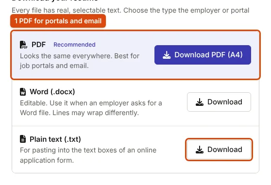

Will an Applicant Tracking System Read Your Resume Correctly?
"ATS-friendly" means one thing: software can pull out every word of your resume, in order. Here is what decides that, and how to test your own file.
What "ATS-friendly" actually means
An applicant tracking system is the software many employers use to collect applications. When you upload a resume, it extracts the text and tries to place it into fields such as name, contact details, experience and education, so that recruiters can search and filter. "ATS-friendly" means one modest thing: the software can extract your text completely and in the right order. It does not mean a guaranteed shortlist, and no tool can promise one, because each employer configures its own system and decides for itself whom to call.
The practical question is therefore simple: if a program copied the text out of your file, would it get every word, in reading order, under clear headings? Everything below is about making the answer yes.
Four things that decide whether the text comes out right
1. The file contains real text
A PDF can hold text or a picture of text. Software reads text directly; a picture needs character recognition, which can fail. Resumes exported from a word processor or from ApplyReady contain real text. A scanned or photographed printout does not. You can tell by trying to select a word in the PDF: if you cannot, it is an image. Our builder's sample resume, downloaded as PDF, is 12.2 KB because it is text; a scan of the same page would be many times larger.
2. One column, top to bottom
Two-column layouts, sidebars and text boxes look tidy but can come out of a text extractor in the wrong order, with sidebar lines mixed into job descriptions. A single column has only one possible reading order. All 15 ApplyReady templates are single-column for this reason.
3. Plain headings
Use headings a reader and a program both recognise: Summary, Experience, Education, Skills, Projects, Certifications. The UK National Careers Service suggests sections for "contact details, an introduction, your education history, your work history and references" and advises using "headings and bullet points to make it easier to read" (How to write a CV). Creative labels such as "My journey" add nothing and may not be recognised.
4. Information as text, not graphics
Skill bars, star ratings, icons standing in for words, and contact details inside a header image are invisible to text extraction. Write "Advanced: SQL" instead of drawing four of five dots, and type your email address in full.
Test your own file in one minute
- Open your PDF, select all the text and paste it into a plain text editor.
- Read the result. Every section should be there, in order, with headings on their own lines and no words run together.
- Check the details a recruiter must be able to copy: name, phone number, email and links.
The builder's plain-text download shows the same thing directly: it is the text a program would get from your resume.

PDF, Word or plain text?
| Format | Use it when | Sample resume size |
|---|---|---|
| Uploading to a portal or emailing a recruiter, unless told otherwise. The layout is the same on every device (Library of Congress on PDF). | 12.2 KB | |
| Word (.docx) | The employer or a consultancy asks for an editable copy | 18.8 KB |
| Plain text | Pasting into a portal's text boxes, or checking what software sees | 3.1 KB |
Sizes are from the builder's built-in sample resume, measured on 24 October 2026.
What does not make a resume ATS-friendly
- Repeating keywords. Matching the advert's words matters, as the National Careers Service says for application forms: "Try to match the words you use to the keywords in the job advert" (Application form advice). But a term should appear where it describes real work. Tailoring a resume to a job description shows how.
- White text or hidden keywords. A person reading the extracted text sees them, and it looks like what it is.
- A "score". Scores from resume websites measure their own rules, not the employer's system.
Content still decides the result once the text is read: results-based bullets (how to write them) and a sensible length (one page or two).
Choosing a template in the builder
Every template in the resume builder is single-column with real text, so the choice is about what a reader sees first. ATS Plain (Maximum Compatibility) has no lines or colour, for older portals. Campus Placement / Fresher puts education and projects first. Software Engineer places technical skills under the summary. Executive Impact leads with selected achievements. Switching templates keeps everything you typed.
Sources
- National Careers Service (UK): How to write a CV, UK government careers service; quoted where its advice applies to applications in India
- National Careers Service (UK): Application form advice
- Library of Congress: PDF 2.0, ISO 32000-2, PDF as a fixed-layout format
Measurements on this page come from running ApplyReady's own tools on the synthetic test images described in the editorial policy. Found a mistake? Report an error.